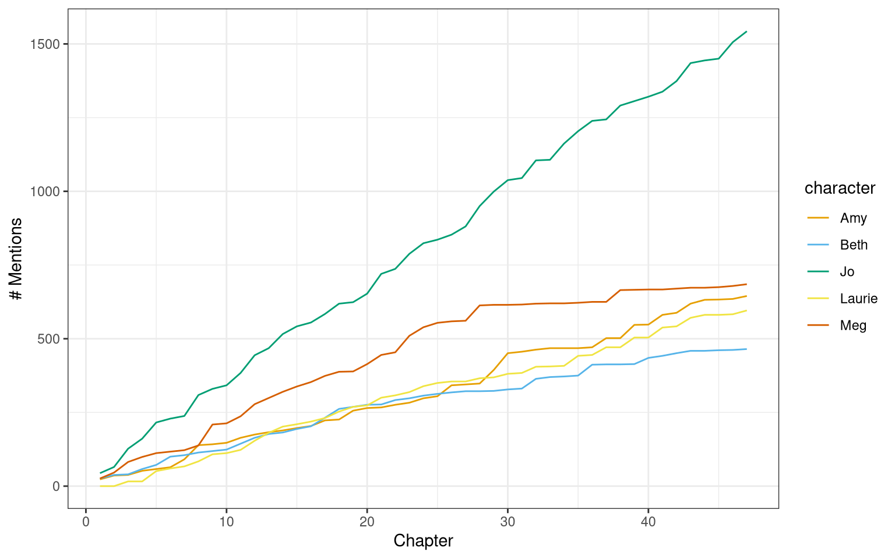
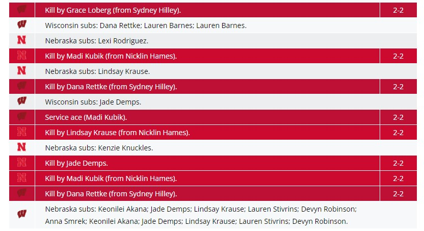
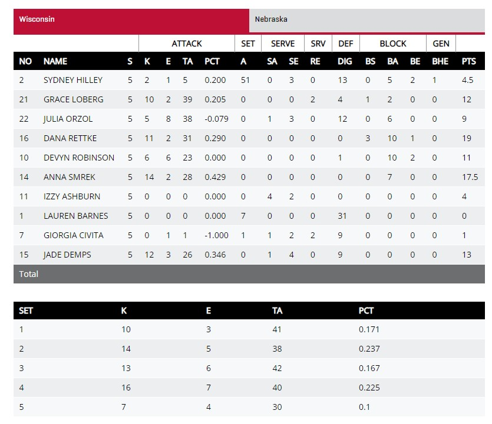
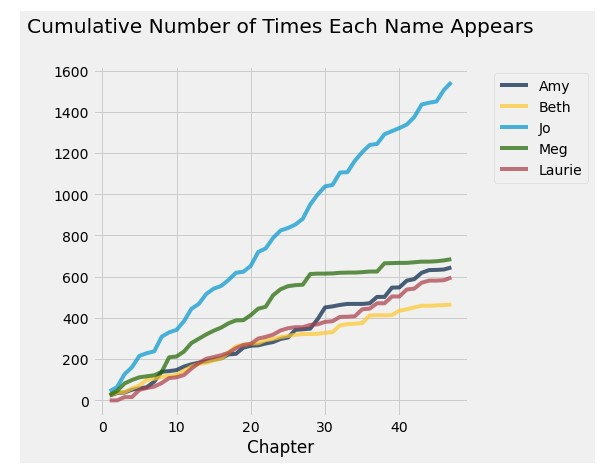
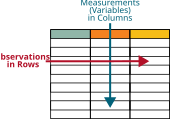

1.1 Course Introduction
Introduction
What is “Data Science”?
“Data science combines math and statistics, specialized programming, advanced analytics, artificial intelligence (AI), and machine learning with specific subject matter expertise to uncover actionable insights hidden in an organization’s data. These insights can be used to guide decision making and strategic planning.”
What is “Data Science”?
“The ability to take data — to be able to understand it, to process it, to extract value from it, to visualize it, to communicate it — that’s going to be a hugely important skill in the next decades.”
– Hal Varian, chief economist at Google and UC Berkeley Professor of Information Sciences, Business, and Economics
What is “Data Science”?
“Data Science draws upon multiple disciplines to develop or apply computational and analytic methods to responsibly explore data and discover actionable insights and accelerate translation into implementation with real-world evidence.”
What is “Data Science”?
“Data Science is about drawing useful conclusions from large and diverse data sets through exploration, prediction, and inference.
Exploration involves identifying patterns in information.
Prediction involves using information we know to make informed guesses about values we wish we knew.
Inference involves quantifying our degree of certainty: will the patterns that we found in our data also appear in new observations? How accurate are our predictions?
Our primary tools for exploration are visualizations and descriptive statistics, for prediction are machine learning and optimization, and for inference are statistical tests and models.”
Class Definition
Data science is the study of the collection, storage, analysis, and visualization/communication of recorded information.
- Collection: how observed events and/or characteristics are recorded in ways that can be explored sometime in the future.
- Storage: How information is efficiently stored for later recall.
- Analysis: How information is processed and organized in order to predict outcomes, or make official statements, about recorded information.
- Visualization/Communication: How information is presented in order to communicate a message motivated by recorded information.
Data Science Life Cycle
From R for Data Science by Hadley Wickham

Why Data Science?
Primary Motivation: Improving our ability to collect, store, analyze, and visualize information \(\Rightarrow\)$\Rightarrow$ Improve our ability to make better decisions.
The “art” of data science
- How do we decide what to measure and how to measure it?
- How do we define what is “best”? Is our “best” ethical?
- How do we handle missing observations?
Attendance Code
Go to Canvas and fill in the attendance code for today
Data Examples
Data comes in all types of formats, not all of which are straightforward to handle…
Computer Vision
Computers “see an image” as a matrix of pixels, where the numbers in the pixel squares represent the intensity of the color. Color images are usually represented as a set of three matrices, where each layer represents the intensity of the red, green, and blue hues respectively.
Sound
Check out https://soundtools.io/music-visualizer/.
Sports
The sample measurements for this exciting sequence might look something like this: Serve2;D7;S17;A16;D8...
Sports
This sample string can be summarized into a play by play.

Sports
Which can be further summarized into a box score.

Sports
Which can be further summarized to simply remember who won the game.
| Year | Champion (Record) | Coach | Score | Runner-Up | Site |
|---|---|---|---|---|---|
| 2021 | Wisconsin (31-3) | Kelly Sheffield | 3-2 | Nebraska | Columbus |
| 2020 | Kentucky (24-1) | Craig Skinner | 3-1 | Texas | Omaha |
Data Science Challenges
What Level of Detail do we need to make a decision?
How can additional detail improve the decision?
Literature
Use “strings” of text to derive insight from literature.

Course Focus
Tabular data

Course Focus
NoteTabular data
data in which the rows represent samples, or observations, and the columns represent variables.
Shelf Name Manufacturer Type Calories Protein Fat
1 Top 100%_Bran N C 70 4 1
2 Top 100%_Natural_Bran Q C 120 3 5
3 Top All-Bran K C 70 4 1
4 Top All-Bran_with_Extra_Fiber K C 50 4 0
5 Top Almond_Delight R C 110 2 2
6 Bottom Apple_Cinnamon_Cheerios G C 110 2 2
Sodium Fiber Carbohydrates Sugars Potassium Vitamins Weight Cups
1 130 10.0 5.0 6 280 25 1 0.33
2 15 2.0 8.0 8 135 0 1 1.00
3 260 9.0 7.0 5 320 25 1 0.33
4 140 14.0 8.0 0 330 25 1 0.50
5 200 1.0 14.0 8 NA 25 1 0.75
6 180 1.5 10.5 10 70 25 1 0.75For this, we will learn how to use R programming to keep track of the changes we make to a raw dataset. This will serve as a journal that helps us to track our data throughout the Data Science Life Cycle.
Data Science Life Cycle
From R for Data Science by Hadley Wickham
Next Time
Introduction to Data Science activity